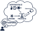

PaNET is a comprehensive, semi-hierarchical vocabulary dedicated to Photon and Neutron Experimental Techniques. A technique is defined by four major aspects

Something is a technique in the scope of PaNET, if
There are two mailing lists for different purposes available. The Announcement List will provide detailed information on releases and will only be sent once or twice a year. It is dedicated to service providers that use PaNET. The Maintenance List is used to invite to the weekly meetings and announce the agendas. It can also be used to initiate discussions and highlight open issues.